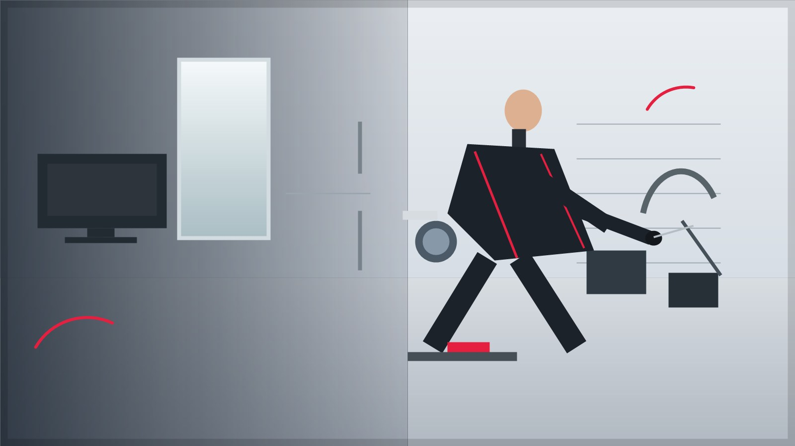

Выезд по Туле
Мастер приезжает на дом или в офис, проводит диагностику и сразу объясняет варианты ремонта.

Remtehcom помогает жителям Тулы и Тульской области ремонтировать бытовую, цифровую и кухонную технику без лишних обещаний и скрытых условий.
Мы работаем с техникой, которая каждый день нужна дома и в офисе: холодильниками, стиральными и посудомоечными машинами, телевизорами, СВЧ-печами, кондиционерами, электроплитами, духовыми шкафами, варочными панелями, кофемашинами, пылесосами и мелкой бытовой техникой.
Главный принцип Remtehcom - объяснить клиенту причину неисправности простым языком. Мастер сначала проводит диагностику, затем согласует работы и только после этого приступает к ремонту. Такой подход помогает избежать неожиданных расходов и лишней замены деталей.
Основной регион обслуживания - Тула. По Тульской области выезд согласуется отдельно: при заявке достаточно назвать адрес, тип техники и признаки поломки. Мы подскажем ближайшее возможное время визита и ориентир по диагностике.
Ремонтируем технику так, чтобы клиент понимал причину поломки, стоимость и срок службы после ремонта.
Мастер приезжает на дом или в офис, проводит диагностику и сразу объясняет варианты ремонта.
Согласуем стоимость до начала работ и не навязываем замену деталей, если техника ремонтопригодна.
После ремонта выдаем гарантию на выполненные работы и установленные комплектующие.
Работаем с холодильниками, стиральными машинами, телевизорами, плитами, кофемашинами и другой техникой.
Прозрачный порядок ремонта помогает заранее понять, что будет происходить с техникой.
Вы звоните или оставляете сообщение, описываете технику, поломку и удобное время визита.
Мастер проверяет узлы, называет причину неисправности и согласует стоимость ремонта.
Выполняем ремонт на дому, а сложные работы по согласованию проводим в сервисной зоне.
Проверяем технику в работе, даем рекомендации по эксплуатации и оформляем гарантию.
Позвоните в Remtehcom или оставьте заявку. Мы уточним тип техники, симптомы неисправности и согласуем удобное время диагностики.